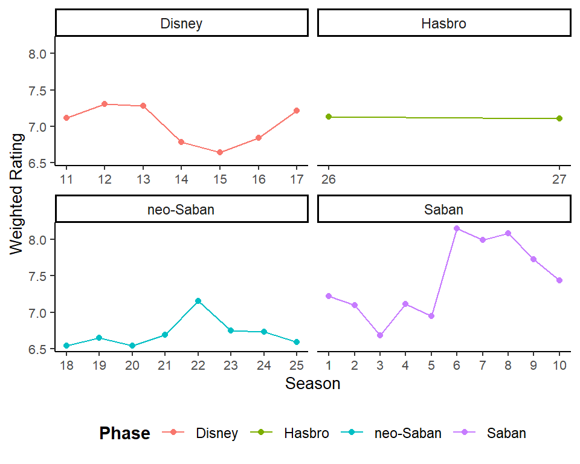
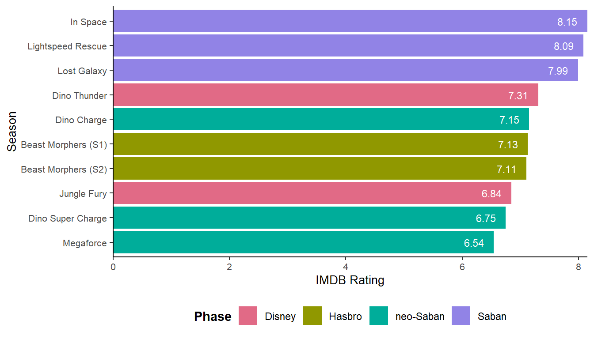
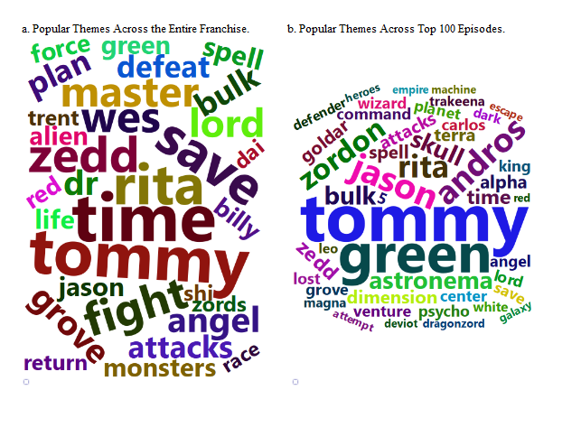

episodes <- read.csv("data/episodes.csv")
seasons <- read.csv("data/seasons.csv")28th August 2024 marked the 31st anniversary of Mighty Morphin Power Rangers, a show that captivated audiences from its debut in 1993. Created by Haim Saban, Shuki Levy, and Shotaro Ishinomori, Power Rangers quickly became a cultural phenomenon, introducing us to five teenagers who became heroes through teamwork and inclusivity (National Day Calander 2024; Aguilar 2024). The franchise expanded beyond TV into toys, movies, games, and more, becoming a cherished part of many childhoods. Today, with Hasbro’s SCG Power Rangers LLC at the helm, it continues to inspire new generations.
This blog delves into the franchise’s enduring appeal by analyzing IMDB ratings and performing sentiment analysis on episode synopses by using the data from the TidyTuesday repository. The repository comprehensive details on every episode released across all seasons, including episode descriptions, IMDB ratings, air dates, producer, the number of episodes per season, and more. The code to load the extracted csv files from TidyTuesday repository in R is given below:
Our goal is to uncover key themes and trends, offering insights that could guide future developments in the Power Rangers universe.
Measuring Popularity: Who Produced the Best Season?
Figure 1 traces the Weighted IMDB rating of across all the seasons of power rangers under different production phases namely, Saban, Disney, neo-Saban & Hasbro. We can observe that the highest rating was achieved under Saban era particularly by Season 6,7 and 8. The neo-Saban era witnessed an consistently low rating across all the seasons produced whereas Disney’s rating have oscillated across the phase of production. Hasbro being the latest entry have only produced 2 season so far and has nearly constant rating.


In Figure 2 we can observe that Power Rangers: In Space is the top-rated season of rangers across all the seasons followed by Power Rangers: Lightspeed Rescue and Power Rangers: Lost Galaxy. All the three shows belong to the Saban era of Power rangers. The bottom two seasons among-st the top 10 entries are from the neo-Saban era namely, Power Rangers: Dino Super Charge and Power Rangers: Megaforce. Also, Dinosaurs seem to be a popular theme in power rangers as 3 of the top 10 seasons have rangers with this theme namely, Power Rangers: Dino Thunder, Power Rangers: Dino Charge & Power Rangers: Dino Super Charge.
Character vs. Theme: What Appeals to the Audience?
In this section we have generated two a word cloud images examining the most-recurring themes in power ranger series. The themes for each episode are derived by tokenizing the description of each episode in the episodes table (see Table 1). We implicitly assume that the description of the episode is linked to popularity and hence the consequent ratings i.e., certain themes in episodes stated in the description attract the attention of the viewers.

In part A (see Figure 3) of the word cloud analysis, we notice that characters such as ‘Tommy’, ‘Rita’, ‘Zedd’, and ‘Wes’ appear frequently. This suggests that these characters were central to the show’s popularity. The recurring themes like ‘save’, ‘friend’, ‘zords’, ‘fight’, and ‘time’ also highlight that the Power Rangers series frequently focused on saving people from monsters, building friendships, and engaging in Megazord battles.
Moving on to part B (see Figure 3) of the word cloud, which covers the top 100 episodes, we see that characters like ‘Tommy’, ‘Rita’, and ‘Zedd’ remain prominent. This indicates that the series’ success during its peak was largely driven by compelling hero and villain narratives. Additionally, characters such as ‘Jason’, ‘Tommy’, and ‘Andros’, who were Red Rangers, also stand out, reinforcing their significant role in the show’s appeal.
However, part B reveals that identifying popular themes is challenging due to the dominance of character names in the word cloud. This suggests that the show’s success was more closely tied to its characters than to themes like ‘friendship’, ‘empire’, ‘spells’, ‘save’, or ‘time’.
Based on the insights from the word cloud analysis, it’s clear that the Power Rangers series found its greatest success through compelling character-driven stories that deeply resonated with audiences. These well-developed characters helped elevate the show to peak popularity. However, as the series began to shift away from focusing on individual characters and moved towards broader themes, there was a noticeable decline in its ratings. As noted by Southard (2022), while character-centric stories foster empathy and engagement, they can also lead to an idolization of characters if not supported by strong storylines. On the other hand, stories centered around themes can promote larger messages but may risk becoming repetitive or oversimplified, which can affect the overall appeal of the show.
Conclusion
In this blog, we have analyzed the evolution of the Power Rangers series over a span of 30 years. The show reached its peak popularity during its early years under the production of Haim Saban. During this time, the series thrived by developing compelling hero and villain arcs and maintaining strong supporting themes. However, as the series changed hands four times in its later stages, there was a noticeable shift in focus. Episodes began to emphasize broader themes such as friendship, saving the world, and fantastical or sci-fi elements like angels, time travel, and spells, rather than concentrating on individual character development. This shift in production and direction appears to have contributed to a decline in the show’s popularity.
References
Aguilar, Matthew. 2024. “Mighty Morphin Power Rangers: On This Day 31 Years Ago, One of the Greatest Franchises Came to Life.” Comic Book, August. https://comicbook.com/powerrangers/news/mighty-morphin-power-rangers-on-this-day-31-years-ago-one-of-greatest-franchises-launched/.
National Day Calander. 2024. “National Power Rangers Day.” https://www.nationaldaycalendar.com/national-day/national-power-rangers-day-august-28.
Southard, Steven R. 2022. “Do You Begin with Character, Plot, or Theme?” https://stevenrsouthard.com/do-you-begin-with-character-plot-or-theme/.
Appendix
| Variable Name | Class | Description |
|---|---|---|
| season_title | character | title of the overall season |
| episode_num | double | number of this episode within this season |
| episode_title | character | title of this episode |
| air_date | double | date on which this episode first aired in the U.S. |
| IMDB_rating | double | average rating among IMDB users |
| total_votes | double | total votes on IMDB |
| desc | character | free-text description of this episode |
| Variable | Class | Description |
|---|---|---|
| season_title | character | title of this season |
| season_num | double | season number |
| number_of_episodes | double | number of episodes in this season |
| air_date_first_ep | double | date on which the first episode in this season first aired in the U.S. |
| air_date_last_ep | character | date on which the last episode in this season first aired in the U.S. |
| producer | character | the company that produced this season |
| IMDB_rating | double | average rating of this seasons among IMDB users |